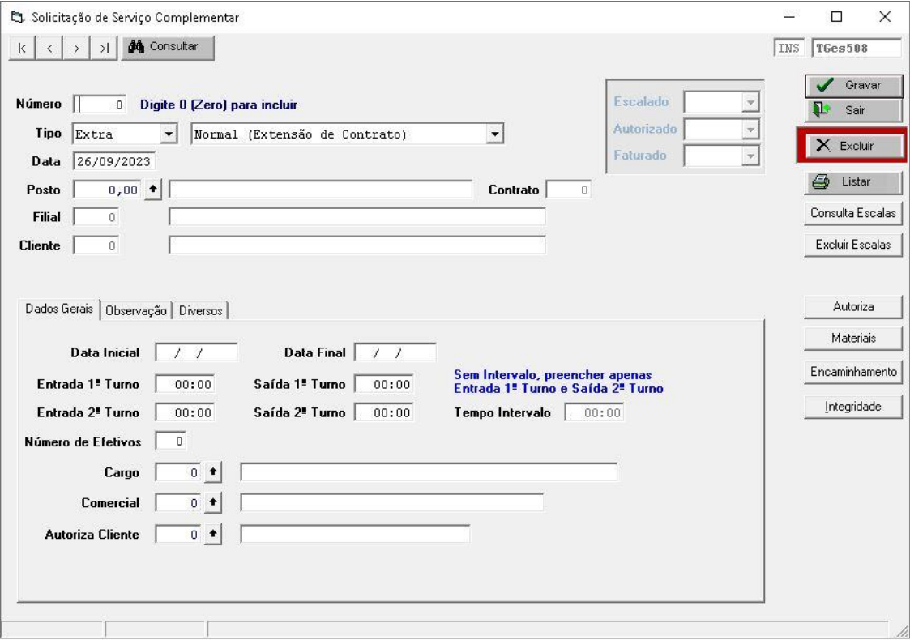

Serviços Complementares

🔧 Serviços Complementares
Pode ser acessado pelo seguinte caminho: GesOper >> Operacional >> Escalas >> Serviços Complementares >> Serviço Complementar
Principais Funcionalidades
- Cadastro de Atividades Específicas Permite a inclusão de atividades que fogem da rotina padrão de trabalho, como treinamentos, reuniões ou serviços externos.
- Monitoramento de Execução Possibilita o acompanhamento em tempo real da execução de atividades complementares e seus responsáveis.
- Relatórios Detalhados Geração de relatórios por colaborador, equipe ou tipo de atividade, com filtros personalizáveis.
- Integração com Jornada e Escala Permite ajustes automáticos nas jornadas e escalas para refletir atividades excepcionais registradas.
- Alertas e Notificações Notifica os responsáveis sobre pendências, atividades agendadas e mudanças nos serviços cadastrados.
Como Utilizar
1. Cadastro de Novo Serviço
- Acesse o menu "Serviços Complementares"
- Clique em "Cadastrar Novo Serviço"
- Preencha os campos obrigatórios:
- Nome do serviço
- Descrição detalhada
- Responsável pela execução
- Data e horário previstos
- Local de realização
- Salve e acompanhe o status do serviço pelo dashboard
2. Edição ou Cancelamento
É possível editar ou cancelar serviços registrados, respeitando o histórico de alterações para fins de auditoria.
Integrações e Conformidade
- Integração com Jornada: Serviços podem alterar temporariamente a jornada padrão sem afetar o histórico principal.
- Integração com Escala: Ajustes de escala podem ser feitos automaticamente para realocar colaboradores envolvidos nos serviços complementares.
- Conformidade com CLT: Todos os registros respeitam as normas da Consolidação das Leis do Trabalho (CLT).
💡 Dica: Utilize os relatórios gerados por este módulo para apresentar evidências de
produtividade em auditorias internas e externas.
Dicas e Boas Práticas
- Organização: Classifique os serviços por tipo para facilitar buscas futuras
- Planejamento: Registre atividades com antecedência mínima de 48h
- Notificações: Habilite alertas para evitar esquecimentos ou atrasos
- Auditoria: Utilize os relatórios do sistema para controle e análise de performance
- Feedback: Após a execução, registre observações e possíveis melhorias